Capítulo 3 Análisis Exploratorio de Datos (EDA)
En este capítulo analizamos las variables cuantitativas del dataset de Concrete Compressive Strength (Resistencia del Concreto).
3.1 Dataset y ficha técnica
Fuente: UCI Machine Learning Repository (Donado por el Prof. I-Cheng Yeh, 2007).
Área: Ingeniería Civil / Ciencia de Materiales.
Número de Observaciones (N): 1,030 ensayos de resistencia (428 mezclas distintas, ver sección 3.9.3).
Número de Variables: 9 variables cuantitativas (8 independientes + 1 dependiente).
Valores Faltantes: Ninguno.
3.4 Diccionario de Variables
Aclaramos que cada observación representa un ensayo de laboratorio: una receta con los ingredientes para un metro cúbico de concreto, el tiempo que se dejó curar y la fuerza que resistió.
Todas las variables son cuantitativas continuas:
diccionario_variables <- tibble(
variable = c(
"Cemento", "Escoria de alto horno", "Ceniza volante", "Agua",
"Superplastificante", "Agregado Grueso", "Agregado Fino", "Edad", "Resistencia"
),
nombre_dataset = c(
"Cement", "Blast_Furnace_Slag", "Fly_Ash", "Water", "Superplasticizer",
"Coarse_Aggregate", "Fine_Aggregate", "Age", "Concrete_Compressive_Strength"
),
tipo = c(
rep("Entrada (Indep.)", 8), "Salida (Dependiente)"
),
unidad = c(
rep("kg/m^3", 7), "Dias (1 a 365)", "MPa"
),
descripcion = c(
"Componente aglutinante principal.",
"Subproducto siderurgico que mejora durabilidad.",
"Subproducto de centrales termicas.",
"Cantidad de agua.",
"Aditivo quimico que reduce necesidad de agua.",
"Grava / Piedra chancada.",
"Arena.",
"Tiempo de maduracion/curado del concreto.",
"Resistencia final a la compresion."
)
)
diccionario_variables |>
tabla_kbl("Diccionario de variables del conjunto de datos")| variable | nombre_dataset | tipo | unidad | descripcion |
|---|---|---|---|---|
| Cemento | Cement | Entrada (Indep.) | kg/m^3 | Componente aglutinante principal. |
| Escoria de alto horno | Blast_Furnace_Slag | Entrada (Indep.) | kg/m^3 | Subproducto siderurgico que mejora durabilidad. |
| Ceniza volante | Fly_Ash | Entrada (Indep.) | kg/m^3 | Subproducto de centrales termicas. |
| Agua | Water | Entrada (Indep.) | kg/m^3 | Cantidad de agua. |
| Superplastificante | Superplasticizer | Entrada (Indep.) | kg/m^3 | Aditivo quimico que reduce necesidad de agua. |
| Agregado Grueso | Coarse_Aggregate | Entrada (Indep.) | kg/m^3 | Grava / Piedra chancada. |
| Agregado Fino | Fine_Aggregate | Entrada (Indep.) | kg/m^3 | Arena. |
| Edad | Age | Entrada (Indep.) | Dias (1 a 365) | Tiempo de maduracion/curado del concreto. |
| Resistencia | Concrete_Compressive_Strength | Salida (Dependiente) | MPa | Resistencia final a la compresion. |
3.5 Exploración del dataset
Resumimos los nombres de las variables
df_clean <- df %>%
rename(
cemento = `Cement (component 1)(kg in a m^3 mixture)`,
escoria = `Blast Furnace Slag (component 2)(kg in a m^3 mixture)`,
ceniza = `Fly Ash (component 3)(kg in a m^3 mixture)`,
agua = `Water (component 4)(kg in a m^3 mixture)`,
superplast = `Superplasticizer (component 5)(kg in a m^3 mixture)`,
agregado_grueso = `Coarse Aggregate (component 6)(kg in a m^3 mixture)`,
agregado_fino = `Fine Aggregate (component 7)(kg in a m^3 mixture)`,
edad = `Age (day)`,
resistencia = `Concrete compressive strength(MPa, megapascals)`
)3.6 Calidad y estructura de los datos
calidad_datos <- tibble(
variable = names(df_clean),
clase = map_chr(df_clean, ~ class(.x)[1]),
tipo = map_chr(df_clean, typeof),
faltantes = map_int(df_clean, ~ sum(is.na(.x))),
valores_unicos = map_int(df_clean, n_distinct)
)
calidad_datos |>
tabla_kbl("Calidad y estructura de los datos", digits = 0)| variable | clase | tipo | faltantes | valores_unicos |
|---|---|---|---|---|
| cemento | numeric | double | 0 | 280 |
| escoria | numeric | double | 0 | 187 |
| ceniza | numeric | double | 0 | 163 |
| agua | numeric | double | 0 | 205 |
| superplast | numeric | double | 0 | 155 |
| agregado_grueso | numeric | double | 0 | 284 |
| agregado_fino | numeric | double | 0 | 304 |
| edad | numeric | double | 0 | 14 |
| resistencia | numeric | double | 0 | 938 |
duplicados <- tibble(
indicador = "Filas duplicadas",
cantidad = sum(duplicated(df_clean))
)
duplicados |>
tabla_kbl("Filas duplicadas del conjunto de datos")| indicador | cantidad |
|---|---|
| Filas duplicadas | 25 |
3.7 Tabla descriptiva de las variables
tabla_descriptiva <- df_clean |>
pivot_longer(
cols = everything(),
names_to = "variable",
values_to = "valor"
) |>
group_by(variable) |>
summarise(
n = sum(!is.na(valor)),
media = mean(valor, na.rm = TRUE),
sd = sd(valor, na.rm = TRUE),
mediana = median(valor, na.rm = TRUE),
RIC = IQR(valor, na.rm = TRUE),
Q1 = quantile(valor, 0.25, na.rm = TRUE),
Q3 = quantile(valor, 0.75, na.rm = TRUE),
minimo = min(valor, na.rm = TRUE),
maximo = max(valor, na.rm = TRUE),
asim = skewness(valor, na.rm = TRUE),
curtosis = kurtosis(valor, na.rm = TRUE),
.groups = "drop"
)
tabla_descriptiva |>
tabla_kbl("Estadísticas descriptivas de las nueve variables", digits = 3)| variable | n | media | sd | mediana | RIC | Q1 | Q3 | minimo | maximo | asim | curtosis |
|---|---|---|---|---|---|---|---|---|---|---|---|
| agregado_fino | 1030 | 773.579 | 80.175 | 779.510 | 93.050 | 730.950 | 824.000 | 594.000 | 992.600 | -0.253 | 2.893 |
| agregado_grueso | 1030 | 972.919 | 77.754 | 968.000 | 97.400 | 932.000 | 1029.400 | 801.000 | 1145.000 | -0.040 | 2.398 |
| agua | 1030 | 181.566 | 21.356 | 185.000 | 27.100 | 164.900 | 192.000 | 121.750 | 247.000 | 0.074 | 3.116 |
| cemento | 1030 | 281.166 | 104.507 | 272.900 | 157.625 | 192.375 | 350.000 | 102.000 | 540.000 | 0.509 | 2.476 |
| ceniza | 1030 | 54.187 | 63.996 | 0.000 | 118.270 | 0.000 | 118.270 | 0.000 | 200.100 | 0.537 | 1.672 |
| edad | 1030 | 45.662 | 63.170 | 28.000 | 49.000 | 7.000 | 56.000 | 1.000 | 365.000 | 3.264 | 15.104 |
| escoria | 1030 | 73.895 | 86.279 | 22.000 | 142.950 | 0.000 | 142.950 | 0.000 | 359.400 | 0.800 | 2.489 |
| resistencia | 1030 | 35.818 | 16.706 | 34.443 | 22.429 | 23.707 | 46.136 | 2.332 | 82.599 | 0.416 | 2.682 |
| superplast | 1030 | 6.203 | 5.973 | 6.350 | 10.160 | 0.000 | 10.160 | 0.000 | 32.200 | 0.907 | 4.401 |
3.7.1 Exploración de la variable de respuesta
tabla_resistencia <- df_clean %>% summarise(n = length(resistencia),
media = mean(resistencia),
sd = sd(resistencia),
mediana = median(resistencia),
RIC = IQR(resistencia),
Q1 = quantile(resistencia, 0.25),
Q3 = quantile(resistencia, 0.75),
minimo = min(resistencia),
maximo = max(resistencia),
asim = skewness(resistencia),
curtosis = kurtosis(resistencia))
tabla_resistencia |>
tabla_kbl("Estadísticas descriptivas de la resistencia a la compresión", digits = 3)| n | media | sd | mediana | RIC | Q1 | Q3 | minimo | maximo | asim | curtosis |
|---|---|---|---|---|---|---|---|---|---|---|
| 1030 | 35.818 | 16.706 | 34.443 | 22.429 | 23.707 | 46.136 | 2.332 | 82.599 | 0.416 | 2.682 |
Vemos que los 1030 ensayos tienen una resistencia media a la compresión de 35.82 MPa, con una desviación estándar de 16.71 MPa. El 50% de los ensayos tiene una resistencia igual o menor a 34.44 MPa. La resistencia máxima observada es de 82.60 MPa y la mínima de 2.33 MPa.
options(scipen = 999)
hist_densidad(df_clean, resistencia, 2, "Distribución de la resistencia del concreto", "Resistencia")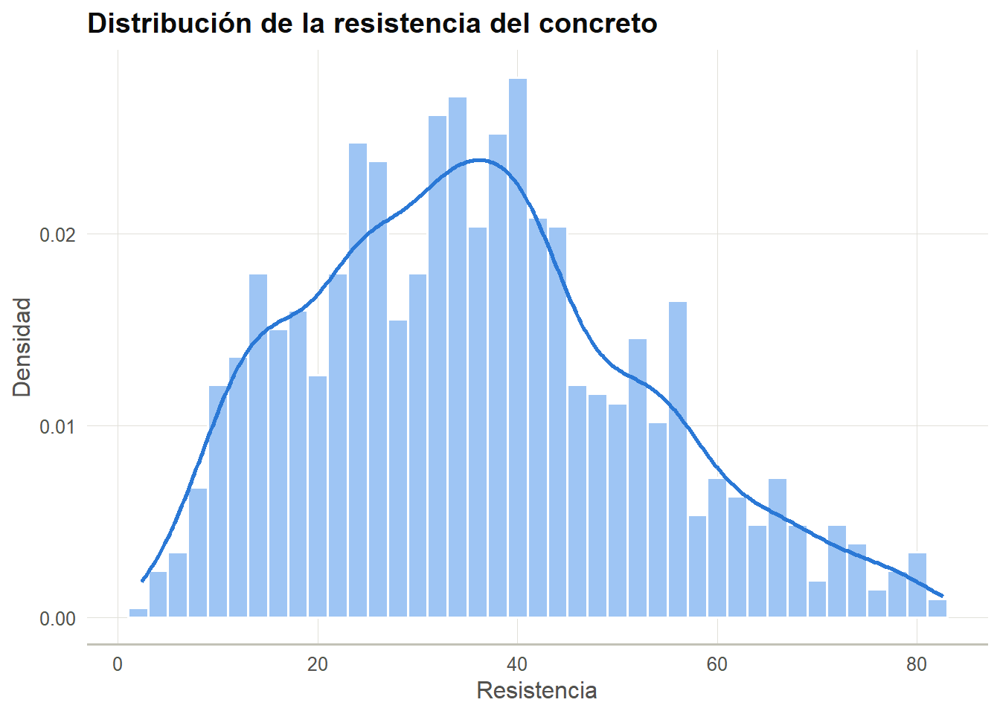
la resistencia muestra una distribución con forma parecida a una simétrica con forma de campana, centrada en torno a los \(35\text{ MPa}\) y abarcando un rango desde los \(2.3\) hasta los \(82.6\text{ MPa}\). La curva de densidad sugiere un comportamiento cercano a la distribución normal, reflejando una muestra equilibrada que abarca desde concretos convencionales hasta mezclas de alto rendimiento. ## Exploración de las variables independientesCreamos la siguiente tabla para observar de forma descriptiva las variables independientes que analizaremos y así complementar el análisis de los boxplots con ella.
tabla_independientes <- df_clean |> select(ceniza, edad) |>
pivot_longer(
cols = everything(),
names_to = 'variables',
values_to = 'valor'
) |>
group_by(variables) |>
summarise(
n = length(valor),
media = round(mean(valor), 3),
sd = round(sd(valor),3),
mediana = round(median(valor), 3),
RIC = round(IQR(valor), 3),
Q1 = round(quantile(valor, 0.25), 3),
Q3 = round(quantile(valor, 0.75), 3),
minimo = round(min(valor), 3),
maximo = round(max(valor), 3),
asim = round(skewness(valor), 3),
curtosis = round(kurtosis(valor), 3))
tabla_independientes |>
tabla_kbl("Estadísticas descriptivas de ceniza volante y edad", digits = 3)| variables | n | media | sd | mediana | RIC | Q1 | Q3 | minimo | maximo | asim | curtosis |
|---|---|---|---|---|---|---|---|---|---|---|---|
| ceniza | 1030 | 54.187 | 63.996 | 0 | 118.27 | 0 | 118.27 | 0 | 200.1 | 0.537 | 1.672 |
| edad | 1030 | 45.662 | 63.170 | 28 | 49.00 | 7 | 56.00 | 1 | 365.0 | 3.264 | 15.104 |
hist_densidad(df_clean, cemento, 20, "Distribución de la dosificación de cemento", "Cemento (kg/m³)")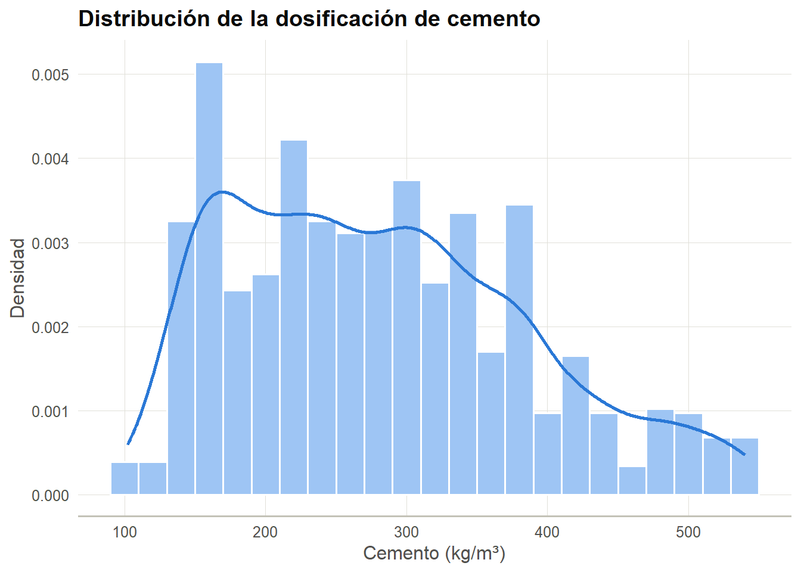
La distribución del cemento presenta una forma unimodal con un sesgo positivo moderado. La mayor concentración de observaciones se encuentra aproximadamente entre los \(200\) y \(350\text{ kg/m}^3\), mientras que algunos valores cercanos a \(540\text{ kg/m}^3\) prolongan la cola superior. Esta asimetría y la extensión de la cola derecha evidencian una distribución no normal, aunque relativamente cercana a una forma acampanada.hist_densidad(df_clean, escoria, 20, "Distribución de la dosificación de escoria", "Escoria de alto horno (kg/m³)")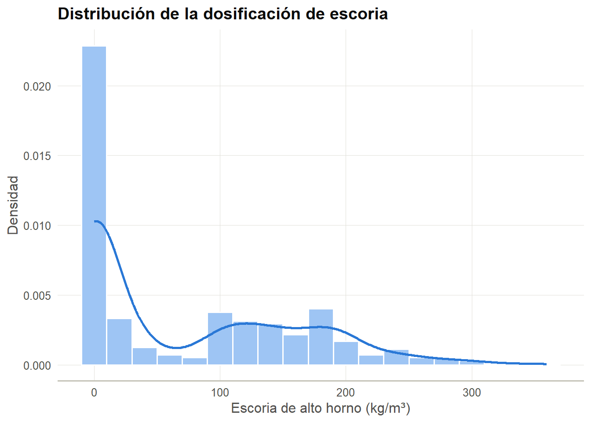
La distribución de escoria se concentra en valores bajos y presenta un marcado sesgo positivo. La mediana es de aproximadamente \(22\text{ kg/m}^3\), mientras que una proporción importante de mezclas no contiene escoria y la cola se extiende hasta cerca de \(360\text{ kg/m}^3\). La concentración en cero y la cola derecha prolongada muestran que la variable tiene una distribución no normal.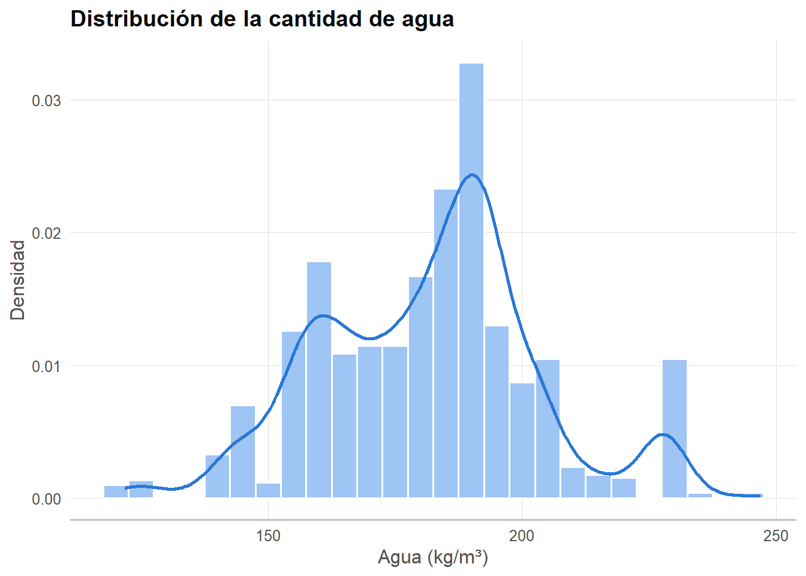
La distribución del agua es unimodal y relativamente simétrica, con una concentración principal alrededor de \(180\text{ kg/m}^3\). Sin embargo, se observan pequeñas desviaciones en los extremos, con valores que van aproximadamente de \(122\) a \(247\text{ kg/m}^3\). Por ello, aunque su forma es cercana a una campana, las discrepancias en las colas evidencian una distribución no normal en sentido estricto.hist_densidad(df_clean, superplast, 2, "Distribución de la dosificación de superplastificante", "Superplastificante (kg/m³)")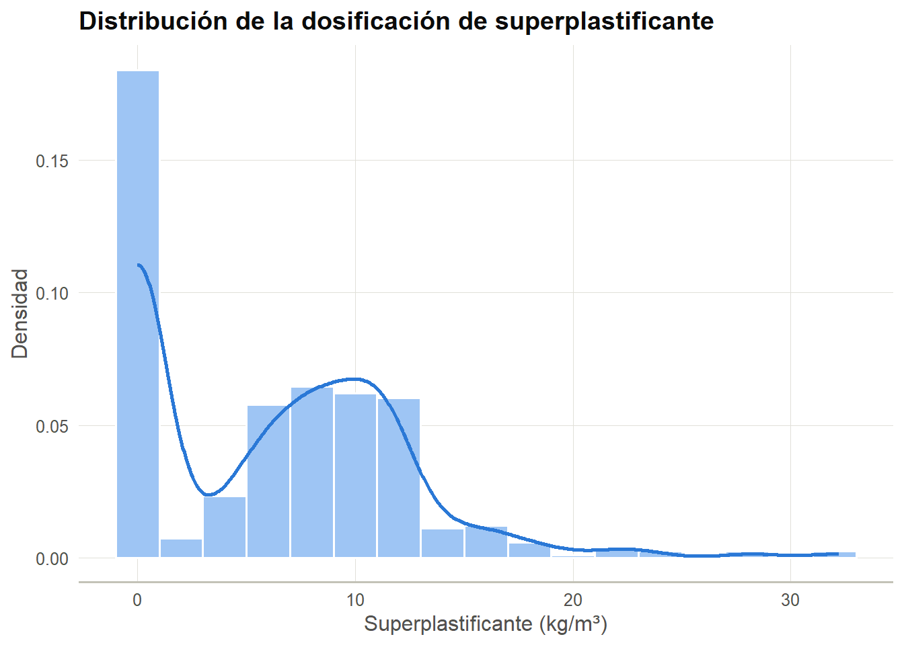
La distribución del superplastificante presenta un marcado sesgo positivo. Se observa una concentración importante en valores iguales o cercanos a \(0\text{ kg/m}^3\), seguida de una cola que se extiende hasta aproximadamente \(32\text{ kg/m}^3\). Este comportamiento refleja el uso diferenciado del aditivo entre las mezclas y confirma una distribución no normal.hist_densidad(df_clean, agregado_grueso, 15, "Distribución del agregado grueso", "Agregado grueso (kg/m³)")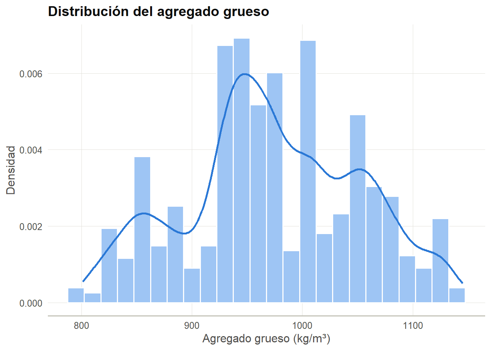
La distribución del agregado grueso es aproximadamente unimodal y simétrica, con la mayor parte de los valores entre \(900\) y \(1050\text{ kg/m}^3\). Se aprecia una ligera variación hacia los extremos, con un rango aproximado entre \(801\) y \(1145\text{ kg/m}^3\). En conjunto, la forma es cercana a la normal, aunque las pequeñas desviaciones observadas indican una distribución no normal.hist_densidad(df_clean, agregado_fino, 15, "Distribución del agregado fino", "Agregado fino (kg/m³)")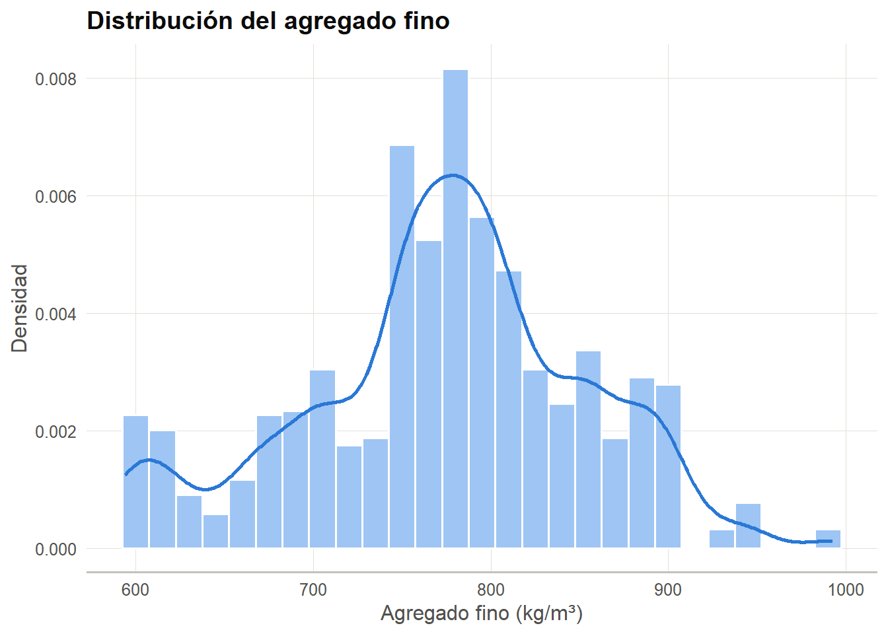
La distribución del agregado fino es unimodal y relativamente equilibrada, con una concentración principal alrededor de \(780\text{ kg/m}^3\). Presenta una ligera asimetría hacia la izquierda y valores comprendidos aproximadamente entre \(594\) y \(993\text{ kg/m}^3\). Aunque visualmente se aproxima a una distribución acampanada, las discrepancias en las colas evidencian una distribución no normal.hist_densidad(df_clean, ceniza, 10, "Distribución del contenido de Ceniza Volante", "Ceniza Volante (kg/m³)")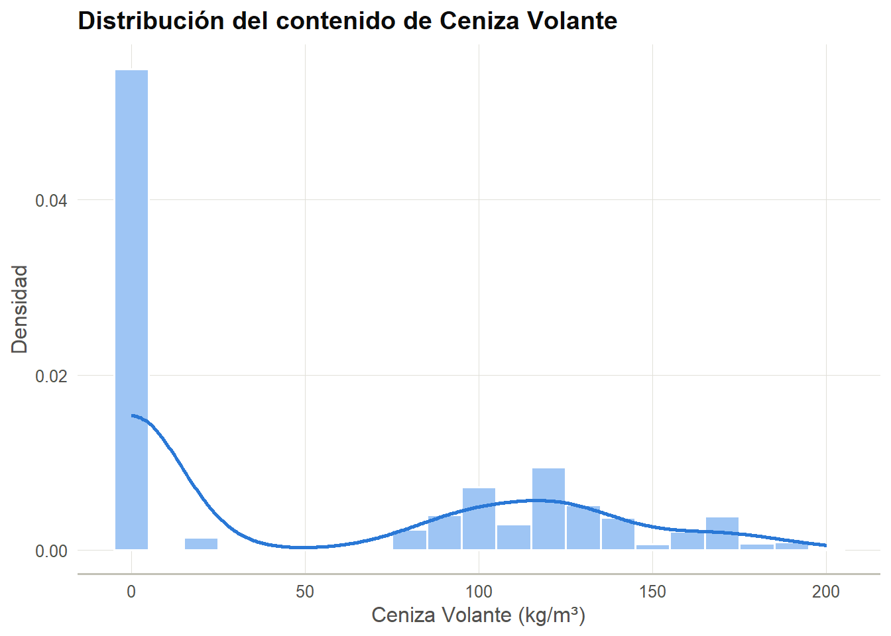
La distribución es fuertemente bimodal e inflada en ceros. Presenta una concentración masiva en los \(0\text{ kg/m}^3\) correspondiente a las mezclas tradicionales de control (\(55\%\) de la muestra), seguida de un segundo agrupamiento entre los \(80\) y \(160\text{ kg/m}^3\) en aquellas formulaciones donde sí se sustituyó cemento por ceniza. Esta notable asimetría y falta de continuidad confirma la no normalidad de la variabl.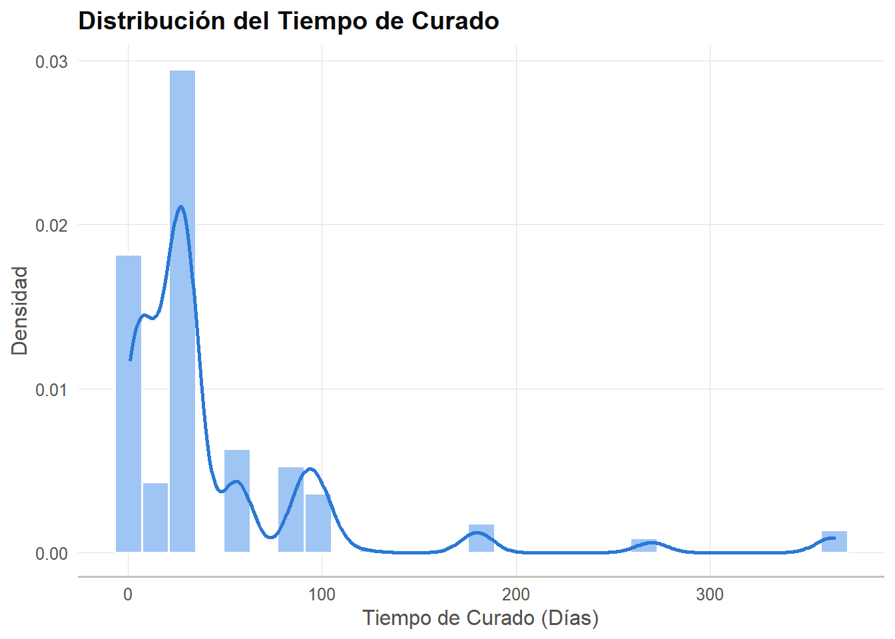
La distribución exhibe un marcado sesgo positivo con picos, concentrando la gran mayoría de las observaciones en los \(28\text{ días}\) la cual es la edad estándar de diseño y en periodos tempranos (\(\le 7\text{ días}\)). La densidad decae drásticamente a partir de los \(56\text{ días}\), extendiéndose en una cola larga hasta los \(365\text{ días}\), lo cual evidencia una distribución no normal explicada por el diseño experimental enfocado en etapas normativas de obra.3.8 Análisis univariado de las variables
# 1. Boxplot de Ceniza Volante
p1 <- df %>%
ggplot(aes(x = "", y = `Fly Ash (component 3)(kg in a m^3 mixture)`)) +
geom_boxplot(fill = col_azul_claro, color = col_azul, linewidth = 0.6) +
labs(
title = "Ceniza Volante (Fly Ash)",
y = "Ceniza Volante (kg/m³)",
x = ""
) +
tema_libro()
# 2. Boxplot de Edad de Curado
p2 <- df %>%
ggplot(aes(x = "", y = `Age (day)`)) +
geom_boxplot(fill = col_azul_claro, color = col_azul, linewidth = 0.6) +
labs(
title = "Tiempo de Curado",
y = "Edad (Días)",
x = ""
) +
tema_libro()
# 3. Boxplot de Resistencia a la Compresión (Target / Variable Respuesta)
p3 <- df %>%
ggplot(aes(x = "", y = `Concrete compressive strength(MPa, megapascals)`)) +
geom_boxplot(fill = col_azul_claro, color = col_azul, linewidth = 0.6) +
labs(
title = "Resistencia a la Compresión",
y = "Resistencia (MPa)",
x = ""
) +
tema_libro()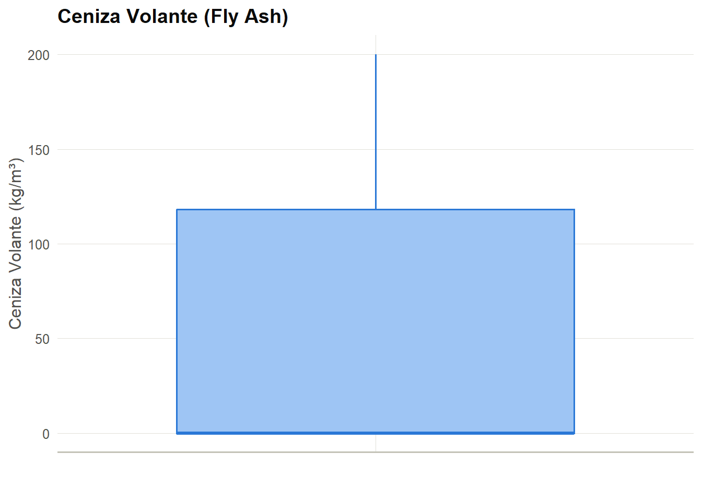
### Análisis del boxplot de ceniza volanteSe observa una distribución atipica con alta dispersión de los datos, además por la tabla anterior la media del uso de ceniza en las mezclas es \(54.2 kg/m^3\) y una desviación estándar de \(64 kg/m^3\)
Sin embargo el diagrama de caja muestra que el 50% de los valores de ceniza coincide con el limite inferior, esto indica que el 50% de las mezclas no contienen contienen ceniza volante. Por otra parte, el 75% de las observaciones contienen una cantidad de ceniza menor o igual a \(118.6 kg/m^3\), mientras que el migote señala mezclas con un maximo de \(201.1 kg/m^3\), no se evidencia ningun valor atipico.
¿porque hay este comportamiento de los datos centrado en cero? esto se debe a que el conjunto de datos contiene mezclas de control convencionales elaboradas exclusivamente con cemento tradicional para servir de base comparativa. Por ende, la ceniza volante actúa como un componente opcional.
3.8.1 Análisis del boxplot de tiempo de curado
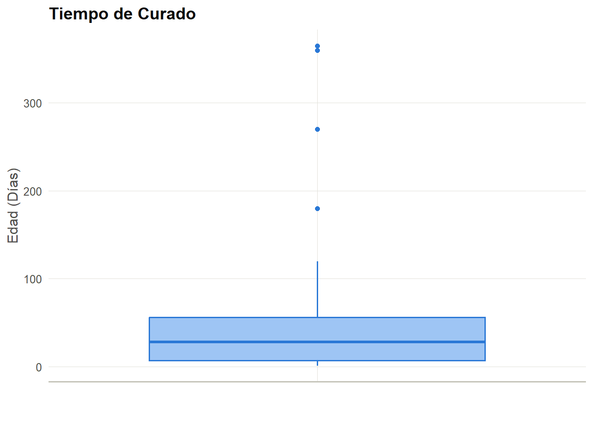
La variable \(\text{Age}\) (días de curado) presenta una concentración en edades tempranas y unagran dispersión, reflejada en un tiempo promedio de curado de \(45.7\text{ días}\) y una desviación estándar de \(63.2\text{ días}\).
El boxplot nos permite observar una distribución sesgada a la derecha: el \(50\%\) de las muestras se ensayó a los \(28\text{ días}\) o menos, el \(25\%\) inferior corresponde a edades tempranas iguales o menores a \(7\text{ días}\) y el \(75\%\) se ensayó a los \(56\text{ días}\) o menos. No obstante, el diagrama de caja evidencia una serie de valores extremos en la parte superior, con ensayos a los \(90\), \(180\), \(270\) y hasta un máximo de \(365\text{ días}\) es decir un año completo de curado.
¿Por qué existen valores atípicos tan elevados?
En la práctica de la ingeniería civil, los ensayos estándar de control de calidad se realizan de forma rutinaria a los \(7\), \(14\) y principalmente a los \(28\text{ días}\). Los tiempos de curado prolongados (\(> 90\text{ días}\)) son ensayos de investigación concebidos para evaluar la durabilidad a largo plazo y la reacción tardía de adiciones minerales como la ceniza volante.
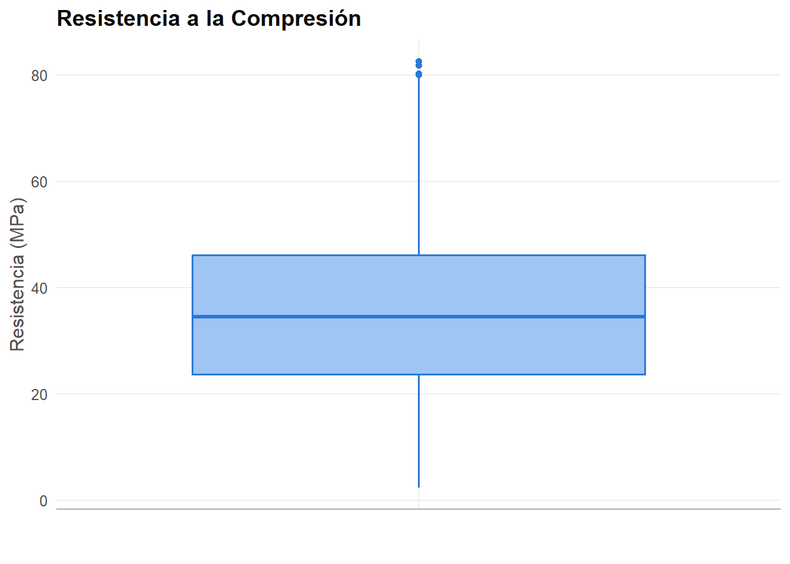
Para la variable objetivo “resistencia”, se observa un comportamiento mucho más homogéneo y balanceado, con un promedio de resistencia de \(35.8\text{ MPa}\) y una desviación estándar de \(16.7\text{ MPa}\).
El 50% de los datos tienen una resistencia menor o igual a \(34.5\text{ MPa}\), mostrando una notable cercanía con el promedio de resistencia de las mezclas de concreto (\(35.8\text{ MPa}\)). En cuanto al rango intercuartílico, el \(25\%\) de las mezclas con menor resistencia registran valores iguales o inferiores a \(23.7\text{ MPa}\), mientras que el \(75\%\) de las muestras se sitúan por debajo de los \(46.1\text{ MPa}\). Los bigotes abarcan un rango que va desde un mínimo de \(2.3\text{ MPa}\) (concreto de muy baja resistencia) hasta aproximadamente los \(80.0\text{ MPa}\). Se aprecian únicamente unos pocos valores atípicos superiores que alcanzan un máximo de \(82.6\text{ MPa}\).
3.9 Análisis bivariado
df_clean |>
ggpairs(
lower = list(continuous = wrap("points", alpha = 0.3, color = col_azul, size = 0.6)),
diag = list(continuous = wrap("densityDiag", fill = col_azul_claro, color = col_azul)),
upper = list(continuous = wrap("cor", color = "#0b0b0b", size = 3))
) +
tema_libro(9)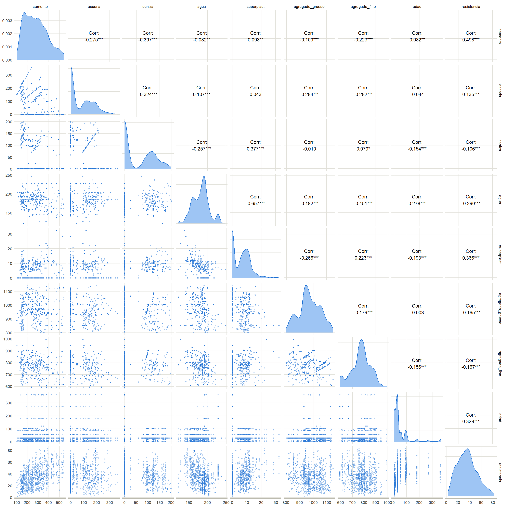
3.9.1 Creación de nuevas variables
Para acercarnos a los objetivos propuestos crearemos nuevas variables las cuales son producto de la transformación y combinación de las variables originales:
df_fe <- df_clean |>
mutate(
# Razón Agua / Cementante (Agua / [Cemento + Ceniza])
razon_agua_cementante = agua / (cemento + ceniza),
#Porcentaje de Cemento sustituido por Ceniza (0% a ~50%)
pct_ceniza = (ceniza / (cemento + ceniza)) * 100,
# Clasificación del reemplazo en niveles (para futuros ANOVAs)
nivel_ceniza = factor(case_when(
pct_ceniza == 0 ~ "0% (Control)",
pct_ceniza > 0 & pct_ceniza <= 20 ~ "Bajo (<= 20%)",
pct_ceniza > 20 ~ "Alto (> 20%)"
), levels = c("0% (Control)", "Bajo (<= 20%)", "Alto (> 20%)")),
# Etapas estándar de curado
etapa_curado = factor(case_when(
edad <= 7 ~ "Temprano (<= 7d)",
edad > 7 & edad <= 28 ~ "Estándar (14-28d)",
edad > 28 ~ "Tardío (> 28d)"
), levels = c("Temprano (<= 7d)", "Estándar (14-28d)", "Tardío (> 28d)")),
# Indicadores binarios: con / sin ceniza y con / sin superplastificante
usa_ceniza = factor(
if_else(ceniza > 0, "Con ceniza", "Sin ceniza"),
levels = c("Sin ceniza", "Con ceniza")
),
usa_superplast = factor(
if_else(superplast > 0, "Con superplastificante", "Sin superplastificante"),
levels = c("Sin superplastificante", "Con superplastificante")
),
# Edad en escala logarítmica (la relación con la resistencia es no lineal)
log_edad = log(edad),
# Razón agua / aglutinante total (la escoria también es aglutinante)
razon_agua_aglutinante = agua / (cemento + ceniza + escoria),
# Porcentaje de ceniza sobre el aglutinante total
pct_ceniza_total = ceniza / (cemento + ceniza + escoria) * 100,
# Identificador de mezcla: misma combinación de los siete ingredientes
id_mezcla = as.integer(factor(paste(
cemento, escoria, ceniza, agua, superplast,
agregado_grueso, agregado_fino, sep = "|"
)))
)¿Por que decidimos crear esta nuevas variables? 1. Creación de Grupos para Pruebas de Hipótesis (Discretización):
etapa_curado: Agrupa los días en 3 periodos (Temprano \(\le 7\) días, Estándar \(14-28\) días y Tardío \(> 28\) días) para evaluar cómo madura el material en el tiempo.nivel_ceniza: Agrupa las mezclas en 3 categorías (Sin Ceniza, Uso Bajo \(\le 20\%\) y Uso Alto \(> 20\%\)) para comparar el impacto del aditivo frente al grupo de control.
Creación de Métricas Relativas (Proporciones):
En lugar de analizar los kilos sueltos de cada material, se crearon dos indicadores más representativos:pct_ceniza: Indica qué porcentaje del cemento total fue reemplazado por ceniza volante.razon_agua_cementante: Mide cuánta agua se usó en relación con el total de polvos aglutinantes (\(\text{agua} / [\text{cemento} + \text{ceniza}]\)), resumiendo tres columnas en una sola métrica de consistencia de la mezcla.
Variables añadidas tras revisar el diseño de los datos:
Las mezclas con ceniza no son “la misma receta más ceniza”: también difieren en cemento, agua, escoria y superplastificante (de hecho, casi todas las mezclas con ceniza usan superplastificante). Por eso se añadieron variables que permiten comparar de forma más limpia y controlar esa confusión:
usa_ceniza: indicador binario (Sin ceniza / Con ceniza). Se usa en la comparación de dos grupos del objetivo 2, ya quenivel_cenizadeja el grupo “Bajo” con muy pocas observaciones.usa_superplast: indicador binario del uso del aditivo, empleado como control del solapamiento con la ceniza.log_edad: logaritmo natural de la edad. La relación edad-resistencia es no lineal (crece rápido al inicio y se estabiliza), por lo que el logaritmo la linealiza.razon_agua_aglutinante: \(\text{agua} / [\text{cemento} + \text{ceniza} + \text{escoria}]\). Corrigerazon_agua_cementante, que ignoraba la escoria aunque también es material aglutinante.pct_ceniza_total: porcentaje de ceniza sobre el aglutinante total (cemento + ceniza + escoria).
3.9.2 Tabla descriptiva de las nuevas variables
tabla_nuevas_numericas <- df_fe |>
select(
razon_agua_cementante, pct_ceniza,
razon_agua_aglutinante, pct_ceniza_total, log_edad
) |>
pivot_longer(
cols = everything(),
names_to = "variable",
values_to = "valor"
) |>
group_by(variable) |>
summarise(
n = sum(!is.na(valor)),
media = mean(valor, na.rm = TRUE),
sd = sd(valor, na.rm = TRUE),
mediana = median(valor, na.rm = TRUE),
minimo = min(valor, na.rm = TRUE),
maximo = max(valor, na.rm = TRUE),
asim = skewness(valor, na.rm = TRUE),
curtosis = kurtosis(valor, na.rm = TRUE),
.groups = "drop"
)
tabla_nuevas_numericas |>
tabla_kbl("Estadísticas descriptivas de las nuevas variables numéricas", digits = 3)| variable | n | media | sd | mediana | minimo | maximo | asim | curtosis |
|---|---|---|---|---|---|---|---|---|
| log_edad | 1030 | 3.165 | 1.191 | 3.332 | 0.000 | 5.900 | -0.151 | 2.642 |
| pct_ceniza | 1030 | 15.526 | 18.788 | 0.000 | 0.000 | 58.841 | 0.649 | 1.859 |
| pct_ceniza_total | 1030 | 13.935 | 16.935 | 0.000 | 0.000 | 55.247 | 0.688 | 2.029 |
| razon_agua_aglutinante | 1030 | 0.469 | 0.127 | 0.472 | 0.235 | 0.900 | 0.403 | 2.768 |
| razon_agua_cementante | 1030 | 0.612 | 0.278 | 0.548 | 0.266 | 1.882 | 1.965 | 7.529 |
tabla_nuevas_categoricas <- bind_rows(
df_fe |>
count(nivel_ceniza, name = "frecuencia") |>
transmute(variable = "nivel_ceniza", categoria = as.character(nivel_ceniza), frecuencia),
df_fe |>
count(etapa_curado, name = "frecuencia") |>
transmute(variable = "etapa_curado", categoria = as.character(etapa_curado), frecuencia),
df_fe |>
count(usa_ceniza, name = "frecuencia") |>
transmute(variable = "usa_ceniza", categoria = as.character(usa_ceniza), frecuencia),
df_fe |>
count(usa_superplast, name = "frecuencia") |>
transmute(variable = "usa_superplast", categoria = as.character(usa_superplast), frecuencia)
)
tabla_nuevas_categoricas |>
tabla_kbl("Frecuencias de las nuevas variables categoricas")| variable | categoria | frecuencia |
|---|---|---|
| nivel_ceniza | 0% (Control) | 566 |
| nivel_ceniza | Bajo (<= 20%) | 43 |
| nivel_ceniza | Alto (> 20%) | 421 |
| etapa_curado | Temprano (<= 7d) | 262 |
| etapa_curado | Estándar (14-28d) | 487 |
| etapa_curado | Tardío (> 28d) | 281 |
| usa_ceniza | Sin ceniza | 566 |
| usa_ceniza | Con ceniza | 464 |
| usa_superplast | Sin superplastificante | 379 |
| usa_superplast | Con superplastificante | 651 |
3.9.3 Estructura de los datos: mezclas medidas a varias edades
Las 1,030 filas son ensayos de resistencia, pero no todas corresponden a mezclas distintas: una misma receta (los siete ingredientes idénticos) se ensaya a varias edades. Se identifica cada mezcla con id_mezcla:
filas_por_mezcla <- df_fe |> count(id_mezcla, name = "filas")
tibble(
indicador = c(
"Filas (ensayos)",
"Mezclas distintas (siete ingredientes idénticos)",
"Mezclas con una sola fila",
"Mezclas ensayadas más de una vez",
"Filas que pertenecen a mezclas repetidas",
"Máximo de filas de una misma mezcla"
),
valor = c(
nrow(df_fe),
nrow(filas_por_mezcla),
sum(filas_por_mezcla$filas == 1),
sum(filas_por_mezcla$filas > 1),
sum(filas_por_mezcla$filas[filas_por_mezcla$filas > 1]),
max(filas_por_mezcla$filas)
)
) |>
tabla_kbl("Mezclas distintas frente a ensayos", digits = 0)| indicador | valor |
|---|---|
| Filas (ensayos) | 1030 |
| Mezclas distintas (siete ingredientes idénticos) | 428 |
| Mezclas con una sola fila | 246 |
| Mezclas ensayadas más de una vez | 182 |
| Filas que pertenecen a mezclas repetidas | 784 |
| Máximo de filas de una misma mezcla | 20 |
Esto tiene una consecuencia importante: las filas de una misma mezcla no son independientes (comparten ingredientes y comportamiento), lo que viola el supuesto de independencia de las pruebas clásicas y subestima los errores estándar. Por eso, en los capítulos siguientes se verifica la independencia, se reporta su incumplimiento y se corrige la inferencia agrupando por mezcla (id_mezcla) con errores estándar robustos o bootstrap por mezclas. Además, esta estructura explica la autocorrelación positiva que se observa en los residuos del modelo de regresión.
3.10 Pruebas de normalidad
La prueba de Lilliefors evalúa la hipótesis nula de que una variable procede de una distribución normal. Para cada variable se utiliza un nivel de significancia de \(\alpha = 0.05\). Si el p-valor es menor que \(0.05\), se rechaza la normalidad.
3.10.1 Cemento
##
## Lilliefors (Kolmogorov-Smirnov) normality test
##
## data: df_clean$cemento
## D = 0.078553, p-value < 0.00000000000000022Al aplicar la prueba de normalidad de Lilliefors a la variable cemento, se obtuvo un p-valor \(< 2.2 \times 10^{-16}\). Al ser significativamente menor que el nivel de significancia \(\alpha = 0.05\), se rechaza la hipótesis nula de normalidad; por tanto, la dosificación de cemento no sigue una distribución normal.
Esta conclusión se corrobora visualmente mediante el gráfico Q-Q. Aunque los cuantiles centrales se aproximan a la recta teórica, se observan desviaciones en ambas colas, especialmente en la cola inferior y en los valores altos. En consecuencia, la variable cemento presenta una distribución aproximadamente acampanada, pero no normal.
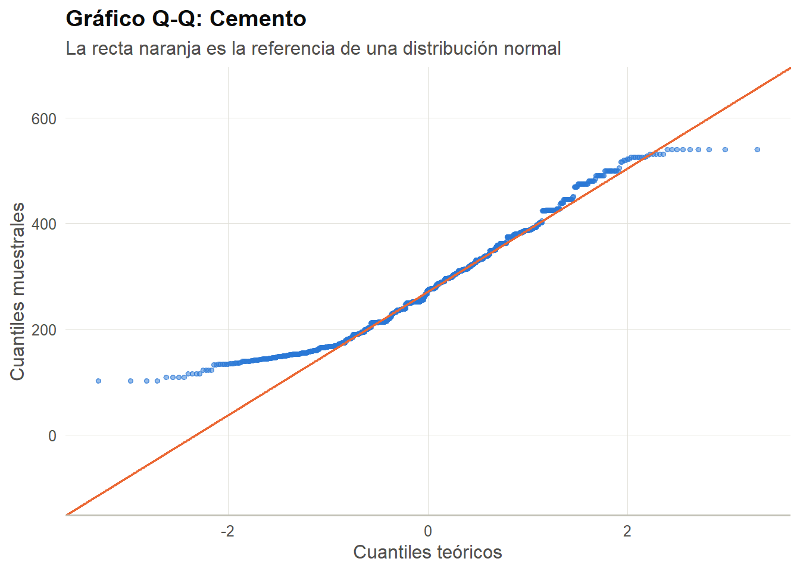
3.10.2 Escoria
##
## Lilliefors (Kolmogorov-Smirnov) normality test
##
## data: df_clean$escoria
## D = 0.26135, p-value < 0.00000000000000022Al aplicar la prueba de normalidad de Lilliefors a la variable escoria, se obtuvo un p-valor \(< 2.2 \times 10^{-16}\). Como este valor es significativamente menor que \(\alpha = 0.05\), se rechaza la hipótesis de normalidad y se concluye que la escoria no sigue una distribución normal.
El gráfico Q-Q muestra desviaciones pronunciadas respecto de la recta teórica, asociadas con la concentración de observaciones en valores bajos y con una cola superior extendida. La forma observada es consistente con una distribución asimétrica y con la presencia de mezclas que no incorporan escoria.
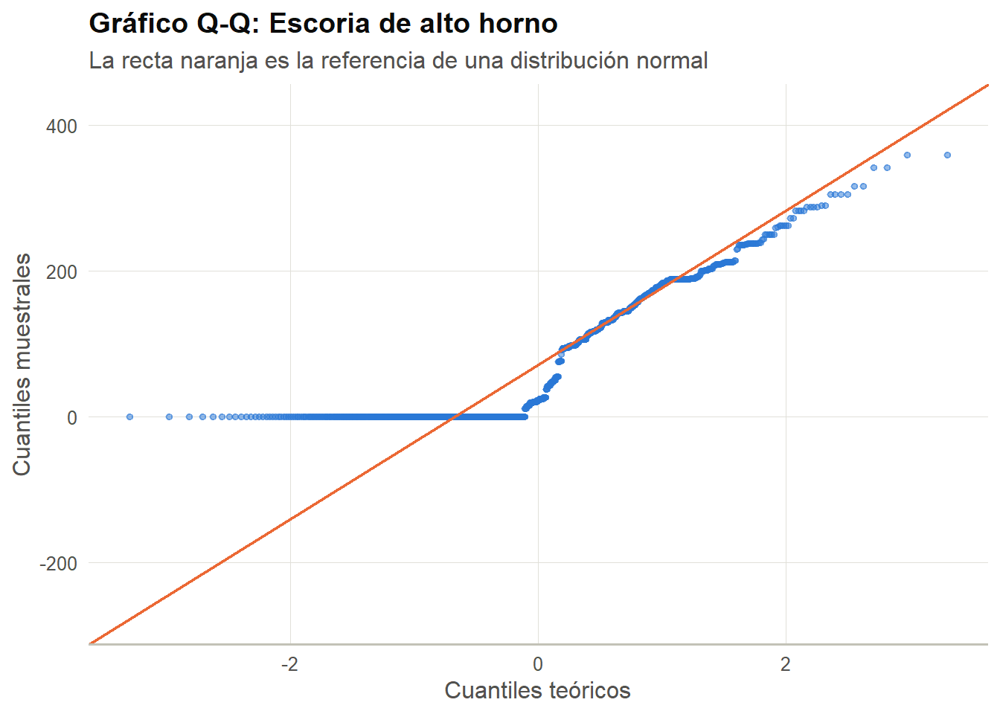
3.10.3 Ceniza volante
##
## Lilliefors (Kolmogorov-Smirnov) normality test
##
## data: df_clean$ceniza
## D = 0.35094, p-value < 0.00000000000000022Al aplicar la prueba de normalidad de Lilliefors a la variable ceniza volante, se obtuvo un p-valor \(< 2.2 \times 10^{-16}\). Dado que es significativamente menor que \(\alpha = 0.05\), se rechaza la hipótesis nula y se concluye que la ceniza volante no sigue una distribución normal.
Esta conclusión se corrobora mediante el gráfico Q-Q, donde la concentración de observaciones en \(0\text{ kg/m}^3\) genera una desviación fuerte respecto de la recta, especialmente en la parte inferior, seguida de discrepancias en la cola superior. Por tanto, la inflación de ceros y la asimetría impiden considerar normal la dosificación de ceniza volante.
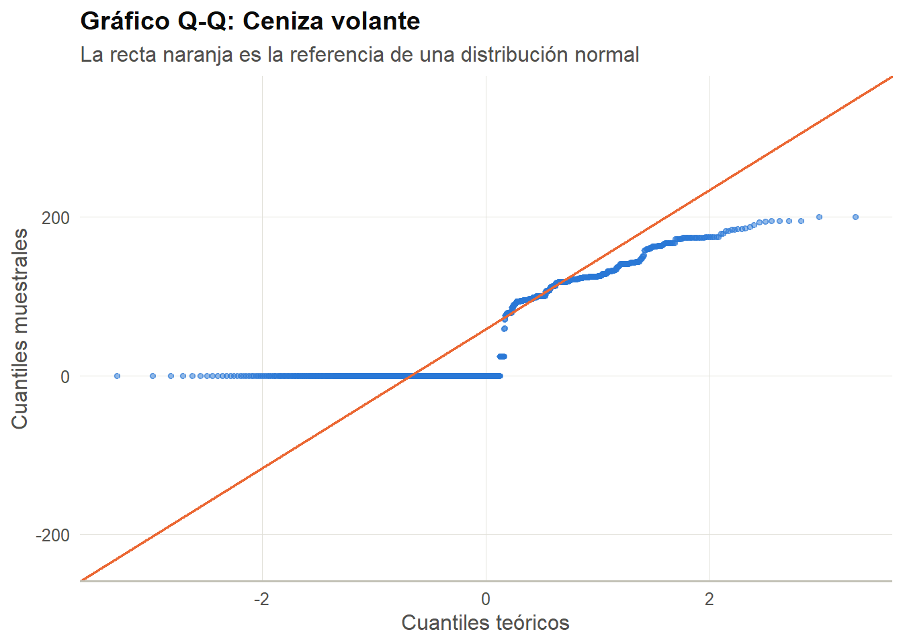
3.10.4 Agua
##
## Lilliefors (Kolmogorov-Smirnov) normality test
##
## data: df_clean$agua
## D = 0.073577, p-value = 0.00000000000002404Al aplicar la prueba de normalidad de Lilliefors a la variable agua, se obtuvo un p-valor \(< 2.2 \times 10^{-16}\). Al ser significativamente menor que \(\alpha = 0.05\), se rechaza la hipótesis de normalidad; en consecuencia, la cantidad de agua no sigue estrictamente una distribución normal.
En el gráfico Q-Q, los cuantiles centrales siguen de manera aproximada la recta teórica, pero se observan discrepancias sistemáticas en las colas. Esto indica una distribución relativamente cercana a la forma normal en el centro, aunque las desviaciones globales son suficientes para rechazar la normalidad.
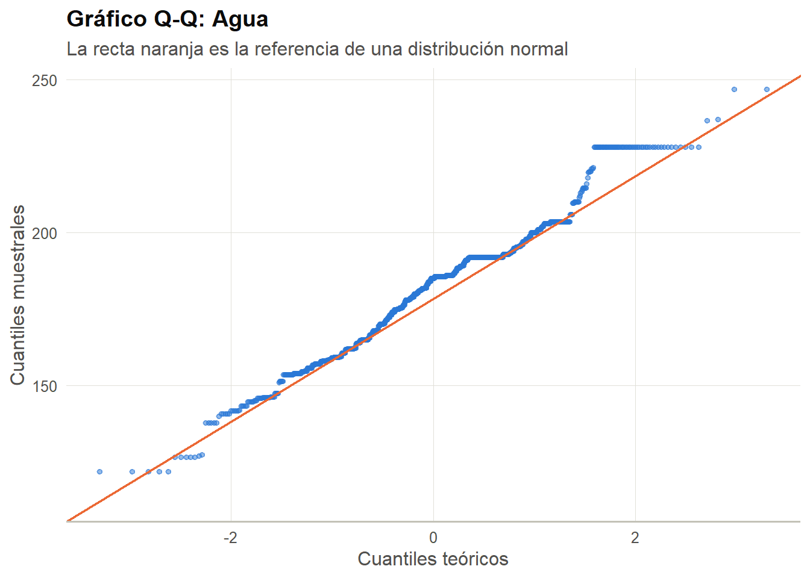
3.10.5 Superplastificante
##
## Lilliefors (Kolmogorov-Smirnov) normality test
##
## data: df_clean$superplast
## D = 0.21843, p-value < 0.00000000000000022Al aplicar la prueba de normalidad de Lilliefors a la variable superplastificante, se obtuvo un p-valor \(< 2.2 \times 10^{-16}\). Puesto que es significativamente menor que \(\alpha = 0.05\), se rechaza la hipótesis nula y se concluye que la dosificación de superplastificante no sigue una distribución normal.
El gráfico Q-Q evidencia una desviación marcada en la parte inferior debido a la concentración de valores iguales o cercanos a cero, además de discrepancias en la cola superior. Este patrón confirma una distribución asimétrica y la presencia de mezclas sin este aditivo.
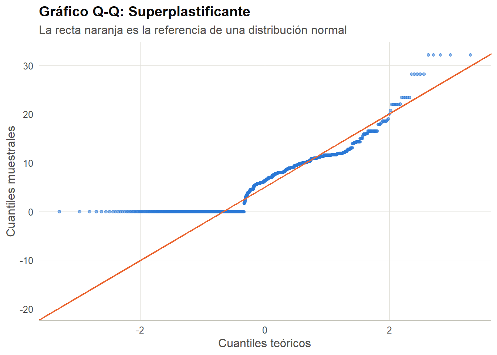
3.10.6 Agregado grueso
resultado_agregado_grueso <- nortest::lillie.test(df_clean$agregado_grueso)
resultado_agregado_grueso##
## Lilliefors (Kolmogorov-Smirnov) normality test
##
## data: df_clean$agregado_grueso
## D = 0.063834, p-value = 0.0000000001252Al aplicar la prueba de normalidad de Lilliefors a la variable agregado grueso, se obtuvo un p-valor \(< 2.2 \times 10^{-16}\). Como el p-valor es significativamente menor que \(\alpha = 0.05\), se rechaza la hipótesis de normalidad y se concluye que la cantidad de agregado grueso no sigue una distribución normal.
En el gráfico Q-Q, los puntos centrales presentan una alineación razonable con la recta teórica, pero las colas se separan de ella, sobre todo en los valores extremos. Por ello, aunque la distribución parece relativamente simétrica, las desviaciones detectadas impiden asumir normalidad.
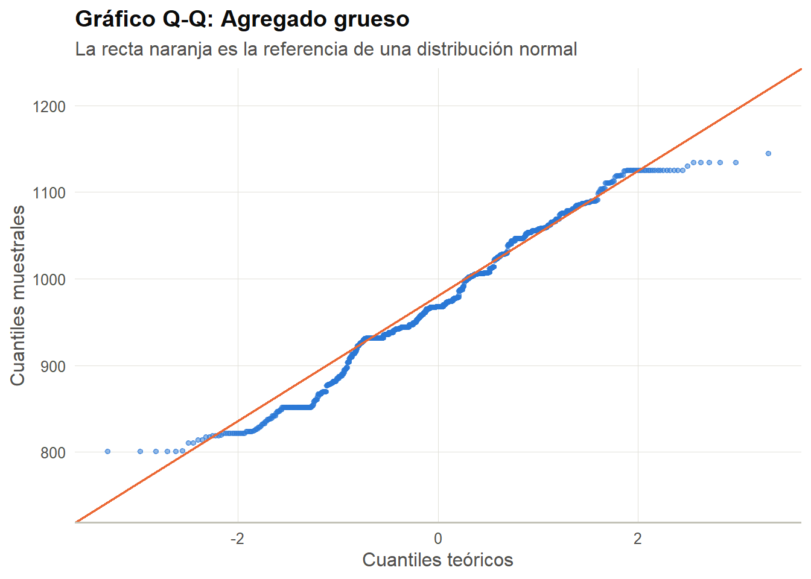
3.10.7 Agregado fino
##
## Lilliefors (Kolmogorov-Smirnov) normality test
##
## data: df_clean$agregado_fino
## D = 0.085723, p-value < 0.00000000000000022Al aplicar la prueba de normalidad de Lilliefors a la variable agregado fino, se obtuvo un p-valor \(< 2.2 \times 10^{-16}\). Debido a que este valor es significativamente menor que \(\alpha = 0.05\), se rechaza la hipótesis nula y se concluye que la cantidad de agregado fino no sigue una distribución normal.
El gráfico Q-Q muestra una aproximación aceptable a la recta en los cuantiles centrales, pero desviaciones visibles en las colas. En consecuencia, la variable puede parecer cercana a la normalidad desde el punto de vista descriptivo, aunque la prueba y los extremos indican que no cumple estrictamente dicho supuesto.
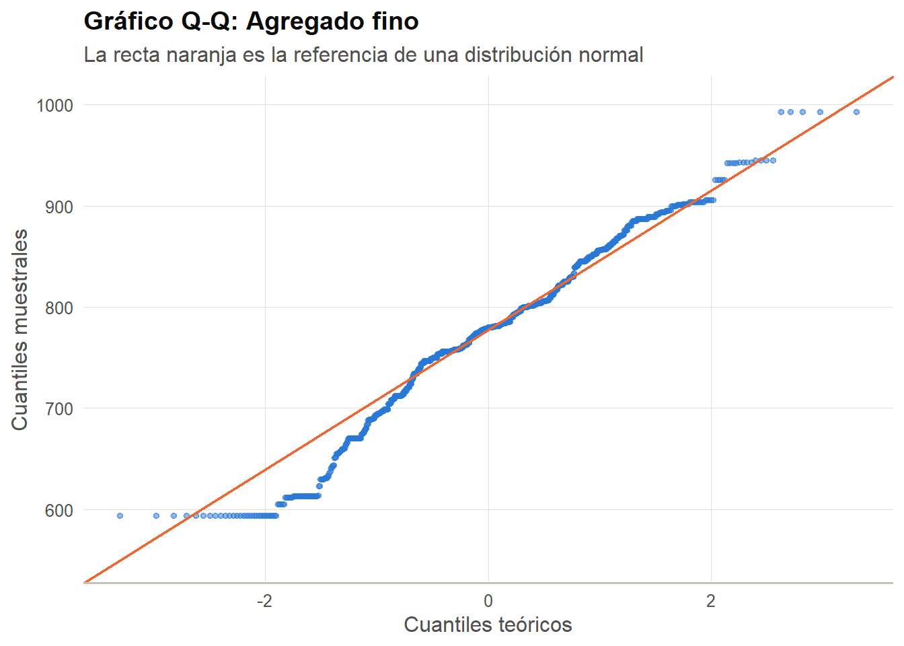
3.10.8 Edad
##
## Lilliefors (Kolmogorov-Smirnov) normality test
##
## data: df_clean$edad
## D = 0.33729, p-value < 0.00000000000000022Al aplicar la prueba de normalidad de Lilliefors a la variable edad, se obtuvo un p-valor \(< 2.2 \times 10^{-16}\). Al ser significativamente menor que \(\alpha = 0.05\), se rechaza la hipótesis de normalidad y se concluye que la edad de curado no sigue una distribución normal.
Esta conclusión se corrobora en el gráfico Q-Q, que presenta una forma escalonada por la concentración de ensayos en edades específicas, especialmente \(7\), \(14\) y \(28\) días, junto con una desviación notable en la cola superior debido a los ensayos de hasta \(365\) días. La variable presenta, por tanto, asimetría y concentración discreta incompatibles con una distribución normal.
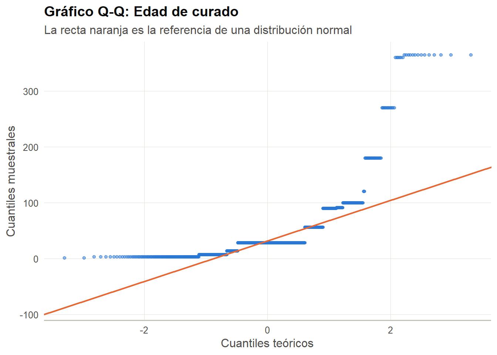
3.10.9 Resistencia
##
## Lilliefors (Kolmogorov-Smirnov) normality test
##
## data: df_clean$resistencia
## D = 0.041303, p-value = 0.0002854Al aplicar la prueba de normalidad de Lilliefors a la variable resistencia, se obtuvo un p-valor \(< 2.2 \times 10^{-16}\). Como es significativamente menor que \(\alpha = 0.05\), se rechaza la hipótesis nula y se concluye que la resistencia a la compresión no sigue una distribución normal.
En el gráfico Q-Q, los cuantiles centrales se aproximan a la recta teórica, pero se observan discrepancias en las colas, particularmente en los valores de resistencia más bajos y más altos. Así, aunque la distribución es relativamente equilibrada y cercana a la normal en el centro, no cumple estrictamente el supuesto de normalidad.
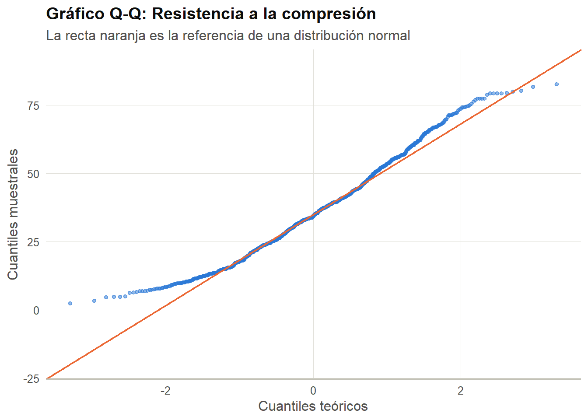
3.10.10 Resumen de las pruebas de normalidad
tabla_normalidad <- tibble(
variable = c(
"Cemento", "Escoria", "Ceniza volante", "Agua",
"Superplastificante", "Agregado grueso", "Agregado fino",
"Edad", "Resistencia"
),
estadistico_D = c(
unname(resultado_cemento$statistic),
unname(resultado_escoria$statistic),
unname(resultado_ceniza$statistic),
unname(resultado_agua$statistic),
unname(resultado_superplast$statistic),
unname(resultado_agregado_grueso$statistic),
unname(resultado_agregado_fino$statistic),
unname(resultado_edad$statistic),
unname(resultado_resistencia$statistic)
),
p_valor = c(
resultado_cemento$p.value,
resultado_escoria$p.value,
resultado_ceniza$p.value,
resultado_agua$p.value,
resultado_superplast$p.value,
resultado_agregado_grueso$p.value,
resultado_agregado_fino$p.value,
resultado_edad$p.value,
resultado_resistencia$p.value
)
) |>
mutate(
decision = if_else(
p_valor < 0.05,
"Rechazar normalidad",
"No rechazar normalidad"
)
)
tabla_normalidad |>
tabla_kbl("Resumen de las pruebas de normalidad de Lilliefors", digits = 4)| variable | estadistico_D | p_valor | decision |
|---|---|---|---|
| Cemento | 0.0786 | 0.0000 | Rechazar normalidad |
| Escoria | 0.2613 | 0.0000 | Rechazar normalidad |
| Ceniza volante | 0.3509 | 0.0000 | Rechazar normalidad |
| Agua | 0.0736 | 0.0000 | Rechazar normalidad |
| Superplastificante | 0.2184 | 0.0000 | Rechazar normalidad |
| Agregado grueso | 0.0638 | 0.0000 | Rechazar normalidad |
| Agregado fino | 0.0857 | 0.0000 | Rechazar normalidad |
| Edad | 0.3373 | 0.0000 | Rechazar normalidad |
| Resistencia | 0.0413 | 0.0003 | Rechazar normalidad |